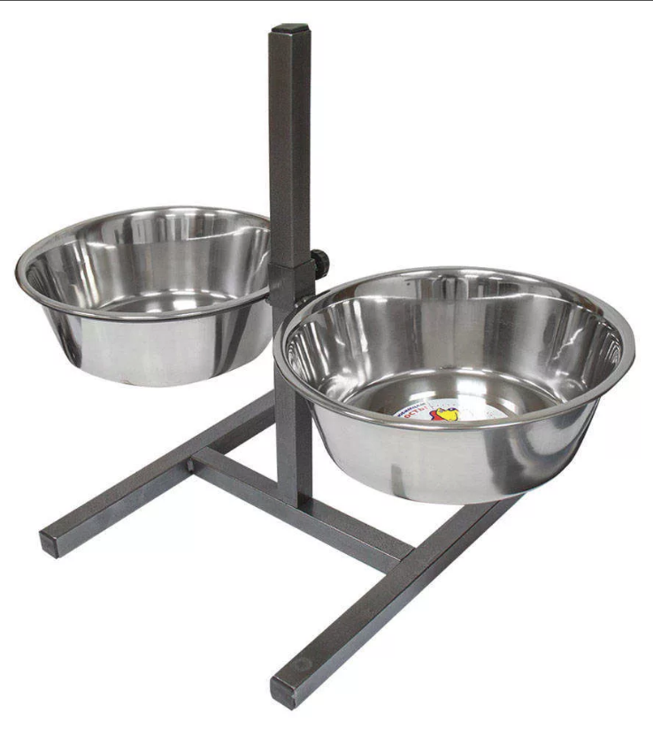
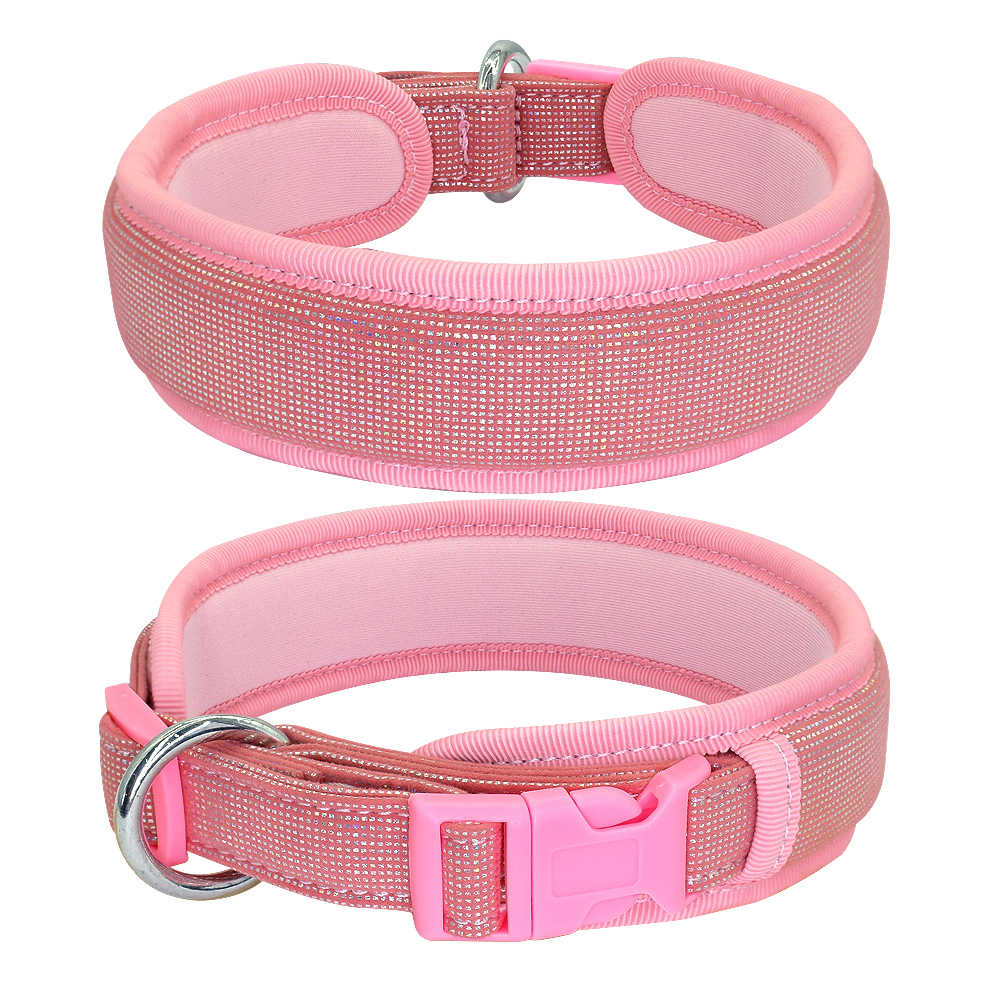
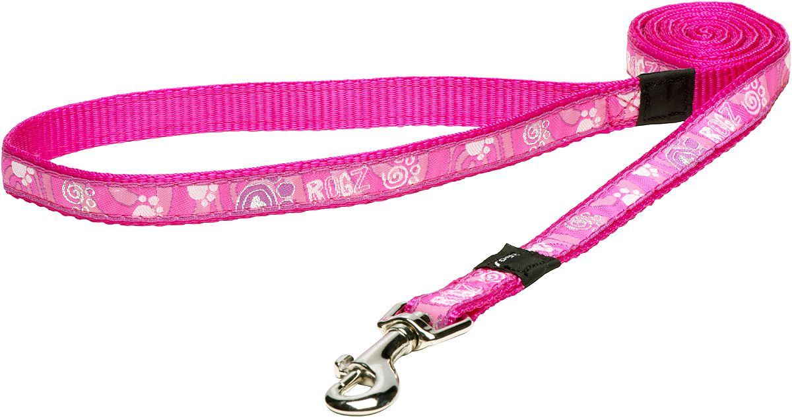
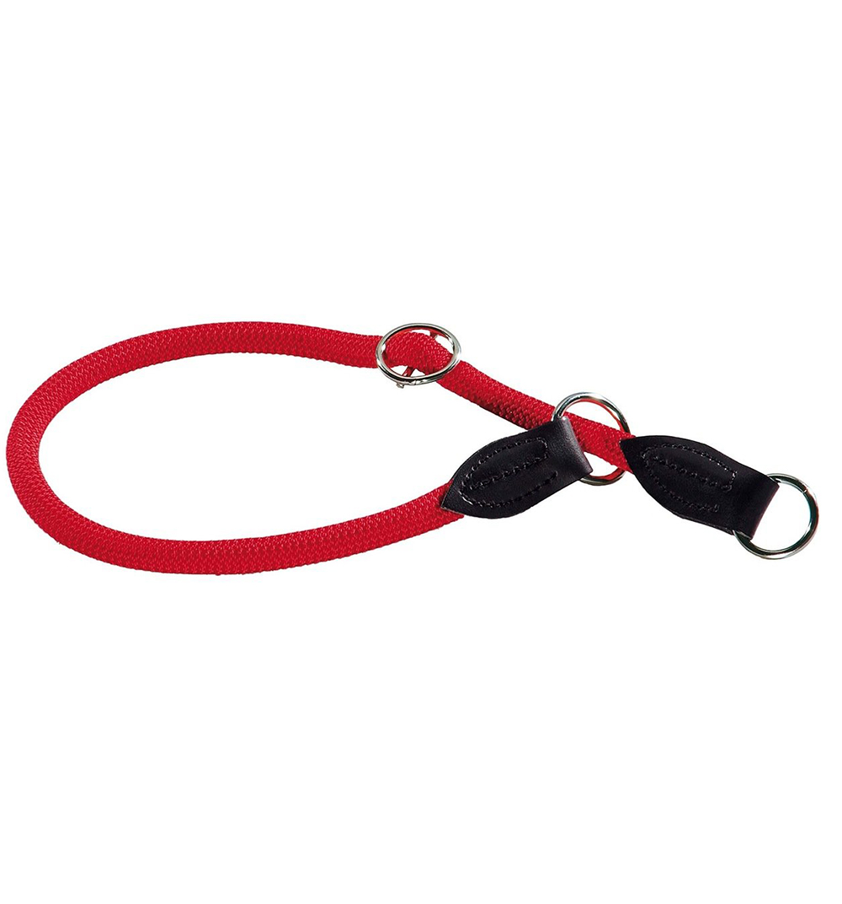
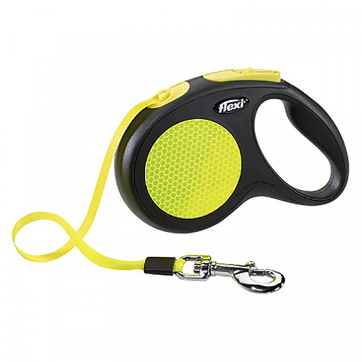
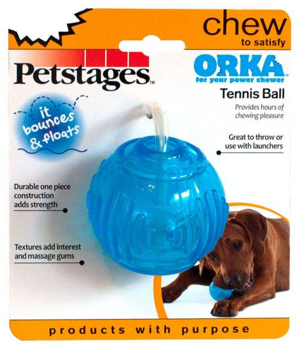
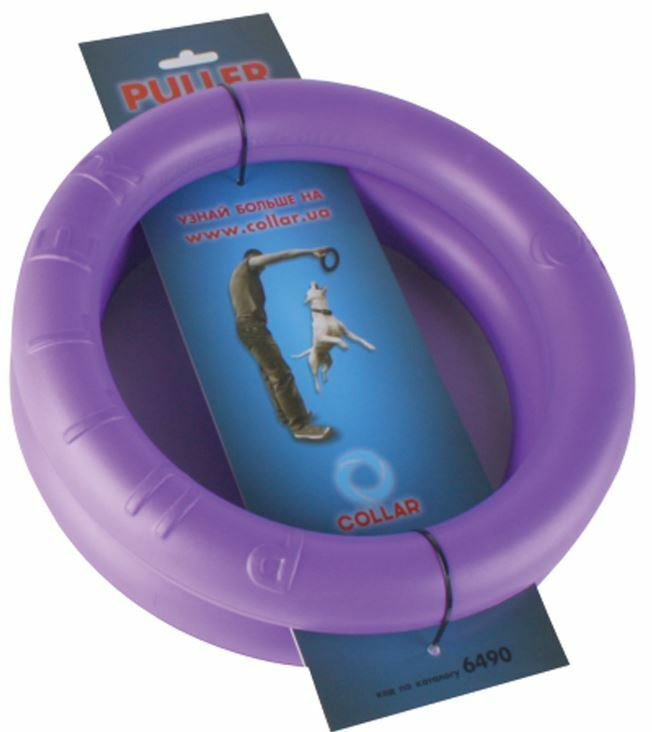
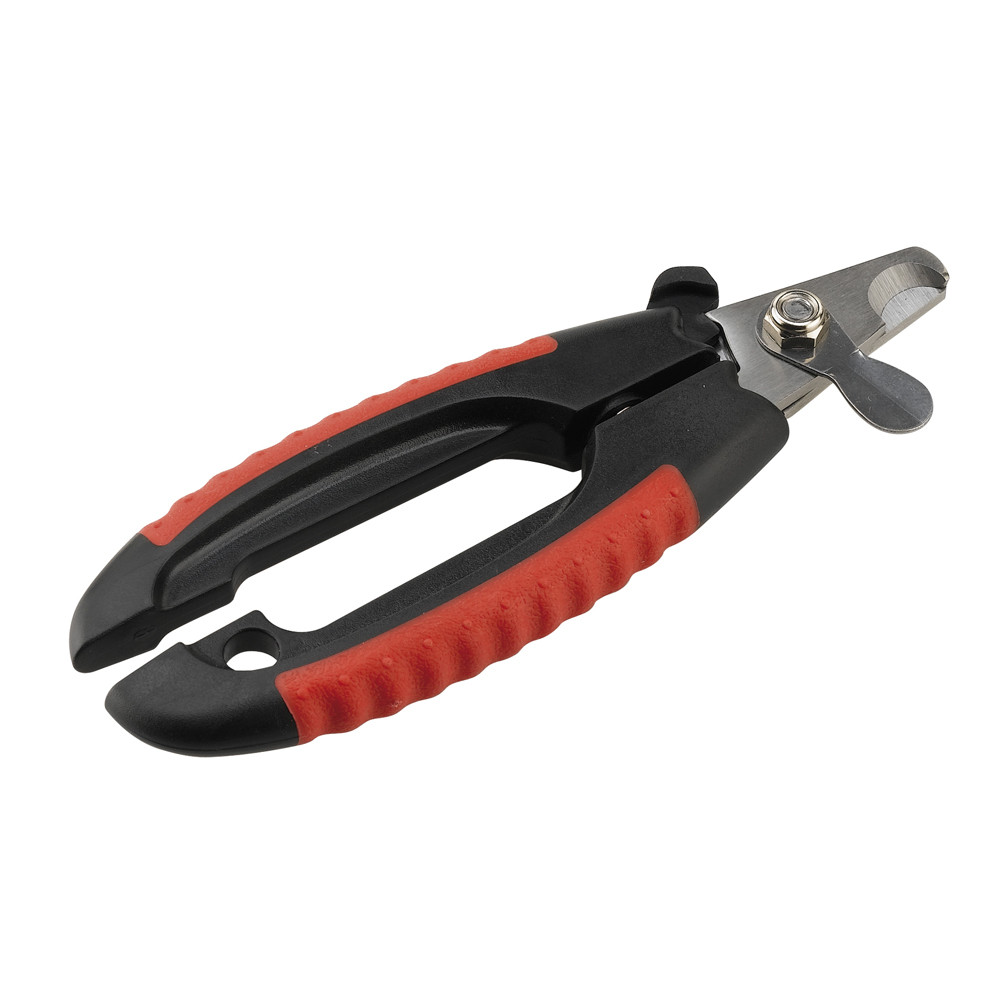

Питание
Для кормления щенка рекомендуем приобрести миски на подставке. Объем одной миски - от 0,7 л.
Желательно брать миски большего объема, для того, чтобы быть уверенным, что в случае ухода на весь день, собака не останется без воды.

- Кормить или сухим кормом, или натуралкой. Лучше не смешивать одно и другое во избежание переизбытка белка.
- До 6 месяцев количество кормлений - 4 раза в сутки, с 6 месяцев до 10 - 3 раза в сутки, с 10 месяцев - 2 раза в сутки.
- После приема пищи обязательно убирайте корм.
- Следите за кондицией собаки. Ребра обязательно должны легко прощупываться. Если собака переедает, дозу кормления необходимо уменьшить. Лучше, если щенок будет худым, чем перекормленным.
- В качестве вкусняшек используйте кусочки мяса, специальных котлеток для собак (сделать фарш из куриных грудок, печени, творога, яйца, немного муки, зубчика чеснока, сформировать котлетки и запечь).
- Сыр строго в ограниченных количествах! Никаких колбас и подобного! Никакой свинины! Не кормите со стола, поберегите здоровье собаки!
- При натуральном кормлении количество мяса у щенка - ~ 50%, у взрослой собаки- ~30%. Примерный суточный объем продуктов - 6-7% от массы тела для щенков и 3-4% для взрослой собаки.
- При натуральном кормлении можно давать нежирное мясо (никакой свинины)!, субпродукты. Мясо должно быть размороженным после глубокой заморозки. Можно обдать кипятком. Не надо варить каши.
Из овощей - морковь, кабачок, тыква и т.д. (никакого картофеля). Можно добавлять немного крупы (не более 30%) - рис, гречка. 1-2 раза в неделю можно давать яйца.
- При натуральном кормлении обязательно нужно давать мультивитамины (например, фирм Canina, 8 in 1), а щенкам - и кальций.
- Из молочки - только кисломолочная продукция (кефир, нежирный творог). Молоко давать не следует.
- При кормлении сухим кормом следуйте инструкции на упаковке. Корм для собак средних пород. Только Премиум и Супер-премиум классов. Своих собак мы кормим кормом Bosch (puppy/junior для щенков и Adult ягненок с рисом для взрослых собак).
- Повторюсь, следите за весом собаки.
Выгул и социализация
- Маленького щенка можно выгуливать только на поводке и ошейнике.

- Ошейник для щенка лучше выбирать из мягкой кожи или с подкладкой из флиса, чтобы не срезать шерсть. Фурнитура должна быть крепкая и не должна травмировать шерсть собаки.
- Поводок не должен быть слишком длинным. Не должен резать вашу кожу. Или слишком сильно скользить в руке. Длина поводка - от 1,5 до 3-х метров. Ширина - 20-25 мм.

- Не затягивайте ошейник слишком туго. Но и выбираться из ошейника собака не должна.
- Примерный обхват шеи 2-х месячного щенка - 20-25 см. Взрослой собаки - 38-45 см.
- Собаку после 9 месяцев рекомендуем выгуливать на полуудавке с ограничителем фирмы Hunter. Размер чаще всего - L.

- Взрослую собаку можно выгуливать как на поводке, так и на рулетке. Мы используем рулетку Flexi Neon до 25 кг Лента 5м.

- Не гуляйте с собакой на детской площадке или вблизи школ. Давайте уважать друг друга.
- Для осени и весны рекомендуем приобрести дождевик. Особенно он спасает от репейника.
- Старайтесь гулять по разной поверхности (грунт, щебень, асфальт и т.д.).
- Зимой давайте вволю побегать собаке по снегу. Это отлично укрепляет лапы.
- До 4-х месяцев щенку строго запрещено спускаться и подниматься по лестницам. После 4-х можно подниматься по лестницам. После 6-ти месяцев - можно спускаться.
- При приучении к выгулу необходимо бежать на прогулку сразу после сна и кормления щенка. Активно хвалите и показывайте свою радость в случае успеха. Постелите дома одноразовую пеленку, чтобы у щенка была возможность сделать дела в правильном месте. НЕ РУГАЙТЕ СОБАКУ, если она сделала дела в неположенном месте. Они сами стремятся к чистоте. Не требуйте от собаки слишком многого (вспомните маленьких детей). С 8-ми месяцев большинство начинают терпеть как взрослая собака. Не скупитесь на похвалу.
- После 4-х месяцев и проведения полной вакцинации активно знакомьте собаку с другими домашними собаками разных размеров. Давайте им понюхать друг друга и поиграть (если вы уверены в безопасности собаки, об этом уточняйте у владельца, прежде, чем подойти к собаке).
- Обязательно выводите собаку "в свет". Ездите на общественном транспорте, в метро, в машине. Приучайте к разным обстановкам и разному уровню шума. В случае проявления страха - не надо жалеть собаку, хваля за робкое поведение. Лучше уверенным голосом отвлеките ее или дайте команду. Покажите, что все хорошо, ничего страшного не происходит.
- Сделайте прогулку интересной для друг друга! Играйте с предметами, бегайте, катайтесь вместе на лыжах или велосипеде. Активные продолжительные прогулки - залог вашего здоровья и здоровья собаки.
Дрессировка
- Начинайте заниматься с щенком, как только он появился в вашем доме. Занятия - это игра для щенка. Активно хвалите за правильное выполнение команд. Заканчивайте занятия всегда на позитиве. С щенком лучше заниматься не более 5 минут, когда внимание полностью сконцентрировано на вас.
- Есть две жизненно-необходимые команды, которые собака должна знать наизусть и выполнять бесприкословно.
- Первая команда - "Ко мне!". Даже если вы никогда не спускаете собаку с поводка, команду нужно знать на зубок. Всегда берите с собой лакомство на прогулку и хвалите за успешное выполнение команды. НИКОГДА не ругайте собаку после подзыва по команде "Ко мне!". Даже если она только что раскопала ваши любимые грядки, съела какую-то гадость в кустах или не сразу вас послушалась. Если собака подбежала по команде - только похвала.
- Вторая команда - "Фу!". Учите команду с детства. Не забывайте про отменяющую команду. И предлагайте что-то взамен от отказанного. Команду должна знать каждая собака.
- Чаще разговаривайте с собакой. Обозначайте одни и те же действия одним словом. "Дома" (когда вы уходите куда-то и оставляете собаку дома), "Кушать", "Мыть лапы", "Купи-купи" (так мы идем купаться :-) ), "Переходим дорогу", "Идем гулять", "Неси мячик", "Где палочка", "Обойди", "Слева", "Справа".
- Одно действие - одна команда.
- Хорошо бы выучить команды "Сидеть", "Лежать", "Стоять", "Место", "Жди". Приучайте к аппортировке.
- Будет прекрасно, если вы пройдет курс "Управляемая городская собака" или "ОКД" или начнете заниматься с собакой аджилити, танцами с собакой или любым другим видом спорта.
- Изучение команд - это лучший способ наладить контакт с собакой.
Игрушки
- У собаки должны быть игрушки. Их должно быть достаточное количество, но не слишком много :-) 3-4 вполне достаточно.
- Мы очень рекомендуем вот этот мячик "Игрушка Petstages для собак «ОРКА теннисный мяч»".

- Наши собаки очень любят играть с пуллером - Collar Puller

- Выбирайте безопасные качественные игрушки. Не покупайте канаты, игрушки с легко отрывающимися частями, пуговицами, пластиковыми глазами и носами.
- Если вы видите, что от игрушка приходит в негодность, лучше уберите ее для безопасности собаки.
Уход за внешним видом
- Подробнее об уходе за шерстью кеесхонда можно почитать тут
- Не забывайте еженедельно вычесывать кеесхонда. И мыть не реже 1 раза в месяц-два месяца.
- Помните, что грязная шерсть не растет!
- Своевременно подстригайте когти (раз в 10-14 дней по чуть-чуть).

Вакцинация, гельминтизация и обработка от клещей
- Подробнее о вакцинации можно почитать тут
- Подробнее об обработке от клещей можно почитать тут
- Мы используем стандартную схему вакцинации: 8 недель - DHPPi+L, 12 недель - DHPPi+LR, ежегодно - DHPPi+LR. Помните, что в последнее время бешенство регистрируют даже в Москве.
- Клещи проявляют активность сразу после появления плюсовых температур весной и до первых заморозков осенью. Весь этот период собаку необходимо обрабатывать от клещей.
- Мы используем капли Барс и Прак-Тик. Капли необходимо капать на холку каждые 4 недели на протяжении всего периода активности паразитов.
- Желательно ежеквартально делать обработку от гельминтов. Продукты жизнедеятельности гельминтов гораздо токсичнее препаратов против гельминтов!
- Против гельминтов мы используем празиквантел, мильбемакс и дронтал. Строго по весу собаки.
Алесенко Елена
19.07.2019 г.
{kind=link}
{kind=link}
{kind=link}
{kind=link}
{kind=link}
{kind=link}
{kind=link}
{kind=link}